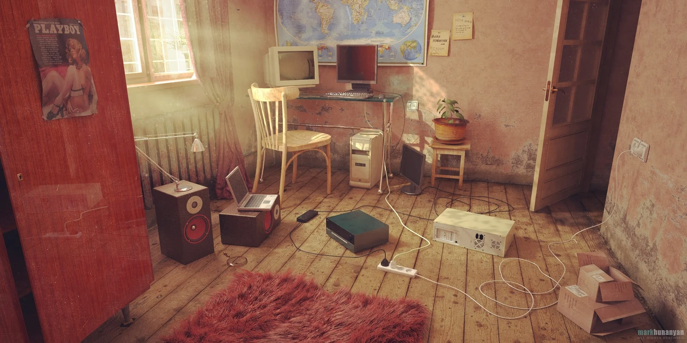
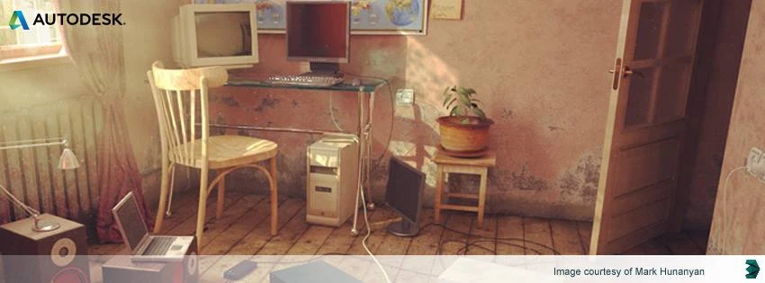
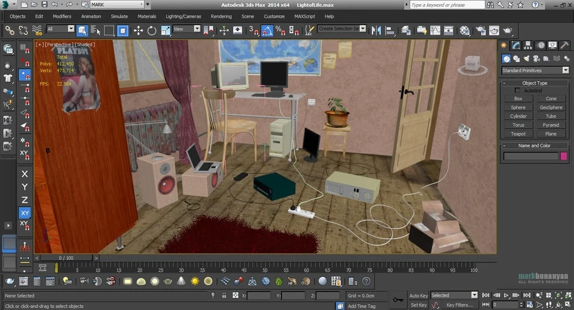
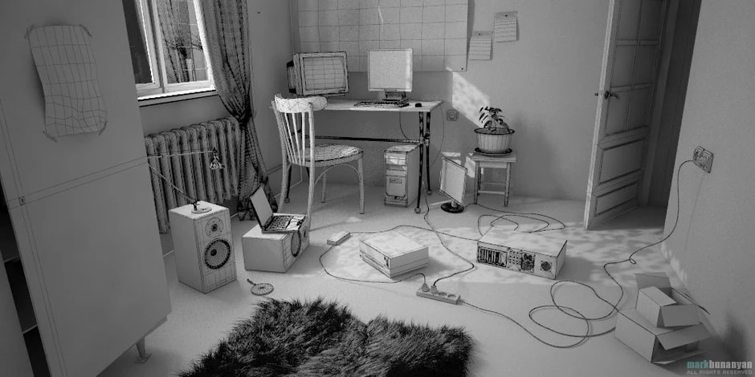

Light of Life

Press & features
- Autodesk 3ds Max social image from 15 May 2014 to 11 August 2014. Facebook X
- 3D Artist magazine — “Light of Life” is our Image of the Day. Facebook X
- 3D Artists — “Light of Life” is our Image of the Day. Facebook

History
“Light of Life” is a deeply personal project that I first started in 2013. For various reasons, I had to put it aside for about a year. In March 2014, I came back to it with improved skills, a fresh perspective, and the motivation to finally bring the idea to life.
The artwork was created using 3ds Max 2014, rendered with V-Ray 3, and finished with a bit of Photoshop for colour correction. I spent around a month and a half refining the scene, which ultimately reached roughly 412,000 polygons. Looking back, it represents an important milestone in my artistic journey and reflects how much I had grown as an artist during that time.
A few months after completing it, I shared “Light of Life” on CGSociety. Not long afterward, Autodesk contacted me to ask if they could feature it as the cover image for their official social media channels, including Facebook and Twitter. It was completely unexpected, and I was genuinely honoured that the developers of the software I enjoyed working with wanted to showcase my work.
Seeing “Light of Life” featured by Autodesk became one of the highlights of my early career. It gave me confidence that the time and effort I had invested in the project had been worthwhile, and it motivated me to keep learning, improving, and creating new work.

